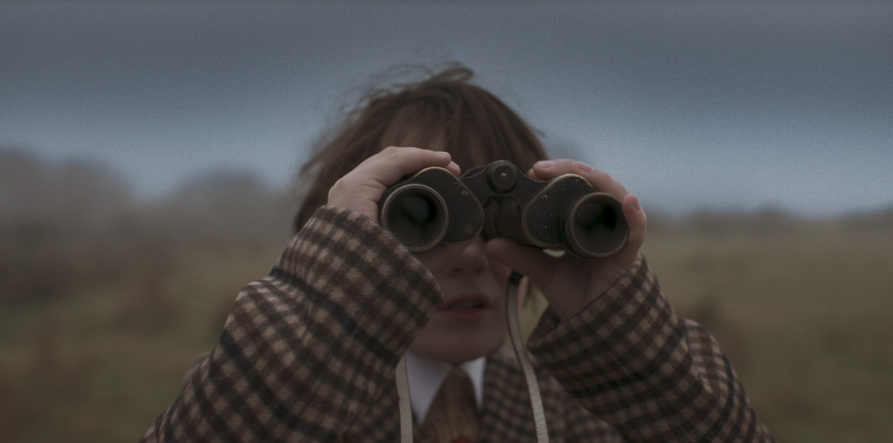

Jacob Joseph Held
Director
Director
Jacob Joseph Held is a filmmaker from London and is the creator of multiple short films which have been screened in festivals across the UK. Jacob's films focus on themes of boyhood, magical realism and loss.
Jacob is currently studying Philosophy at University of Bristol whilst pursuing filmmaking as a career.
For inquiries about collaborations, screenings, or representation, please get in touch.
jacobheld1@outlook.com